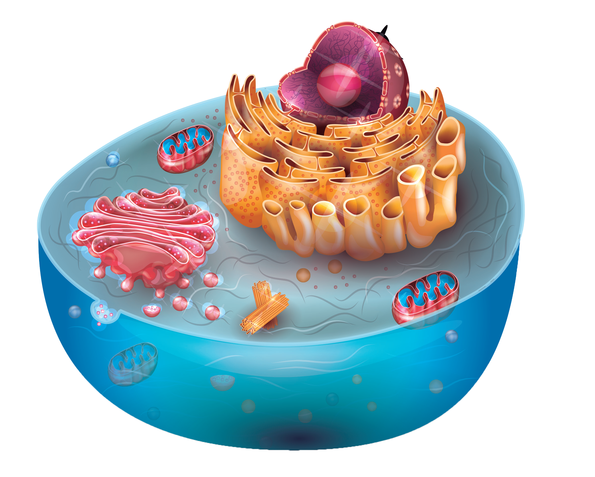

Lee la pista y escribe el nombre del organelo que corresponde.
Es el encargado de la modificación, empaquetamiento y distribución de proteínas y lípidos sintetizados en la célula. Recibe estos productos, los procesa y los dirige hacia su destino final dentro o fuera de la célula.
Es el orgánulo responsable de la producción de energía celular. En su interior, la glucosa se oxida mediante procesos metabólicos como la respiración celular, generando ATP, la principal fuente de energía para las funciones celulares.
Es el sitio de la célula donde se guarda el ADN y se controla todo. Tiene poros que permiten el paso de sustancias.

Es el orgánulo encargado de la síntesis de proteínas, donde se traduce la secuencia de ARN mensajero para ensamblar cadenas de aminoácidos según el código genético.
Es el líquido gelatinoso que llena la célula, donde flotan todos los organelos. Aquí ocurren muchas reacciones metabólicas.
Es la estructura externa que delimita la célula y actúa como una barrera selectiva, regulando el intercambio de sustancias entre el interior celular y el medio externo. Está compuesta por una bicapa lipídica con proteínas incrustadas que permiten el transporte y la comunicación celular.